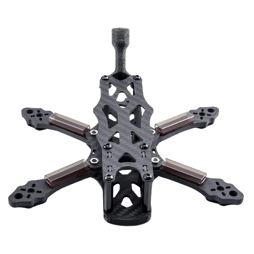
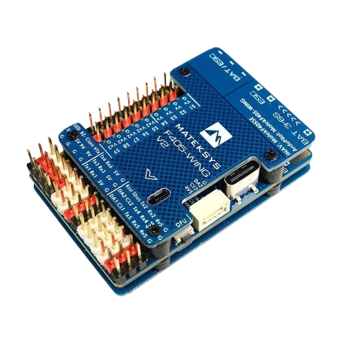

Bibliography
Return to report








Works Cited
- AeroVironment. “P550®.” 2 June 2026, www.avinc.com/solution/p550.
- “AI in Drones: How Machine Learning AI Is Changing the UAV Industry.” DroneX 2026, 28 Feb. 2025, dronexpo.co.uk/news-1/ai-drones-machine-learning-ai-changing-uav-industry.
- Bionic Bird. “Bionic Bird: Biomimetic Drones.” 15 Apr. 2026, www.bionicbird.com/usa/?v=5435c69ed3bc.
- “Drone Propellers Explained: Types, Material, Size, and Performance.” Beyond Sky, 6 Feb. 2026, beyondsky.xyz/blog/hardware/drone-propellers-explained-types-material-size-and-performance.
- Flysmart Training Inc. “Basic Training.” Flysmart Training, 16 Sept. 2026, www.flysmarttraining.ca/rpas/basic-training.
- “HQ Bullnose Props.” Innov8tive Designs, innov8tivedesigns.com/products/propellers/hqmultirotorprops/hq-bullnose-props.html.
- Maris-Tech. “Types of Drone Payloads for ISR and Surveillance.” 9 June 2026, www.maris-tech.com/blog/types-of-drone-payloads-for-isr-and-surveillance.
- RPAS Centre. “Free Drone Training Courses | Drone License Canada & Flight Review.” 17 Sept. 2026, rpascentre.com.
- Vos, Arantxa. “Flight Controllers Explained for Everyone.” Fusion Engineering, 9 Oct. 2020, fusion.engineering/flight-controllers-explained-for-everyone.
- “What Are Brushless DC Motors?” Renesas, www.renesas.com/en/support/engineer-school/brushless-dc-motor-01-overview.
- Ziroth. “The Genius of Bionic Bladeless Propellers.” YouTube, 19 Feb. 2025, www.youtube.com/watch?v=iYsoDS0UM4c.